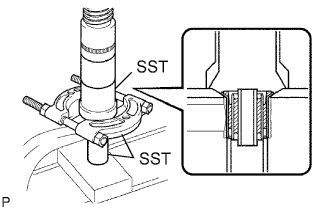

FRONT UPPER SUSPENSION ARM > DISASSEMBLY |
| 1. REMOVE FRONT SUSPENSION UPPER ARM BUSH LH |
 |
Using a hammer and chisel, strike and bend the entire flange of the upper arm bush as shown in the illustration.
|  |
Using SST and a press, press out the bush.
| 2. REMOVE FRONT UPPER BALL JOINT DUST COVER LH |
 |
Using a snap ring expander, remove the dust cover set ring and dust cover from the upper arm.